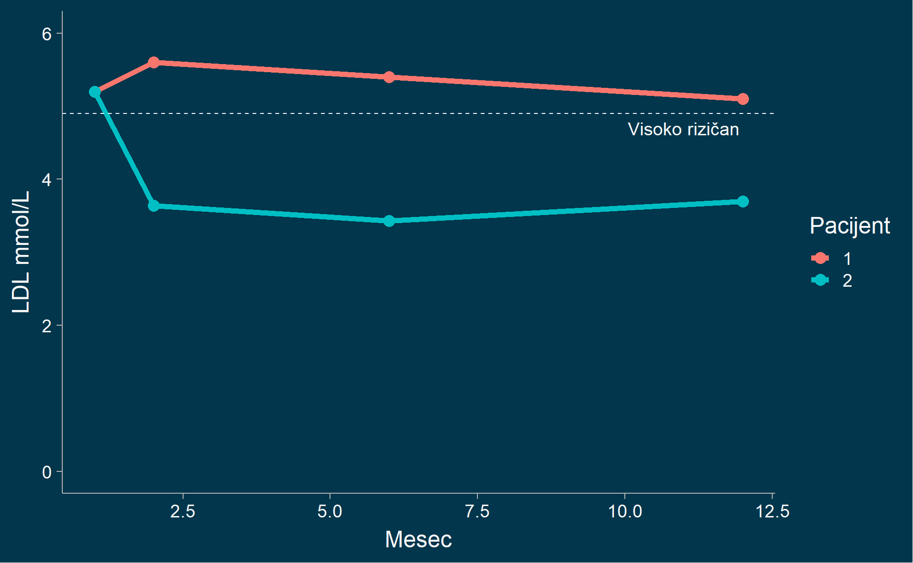
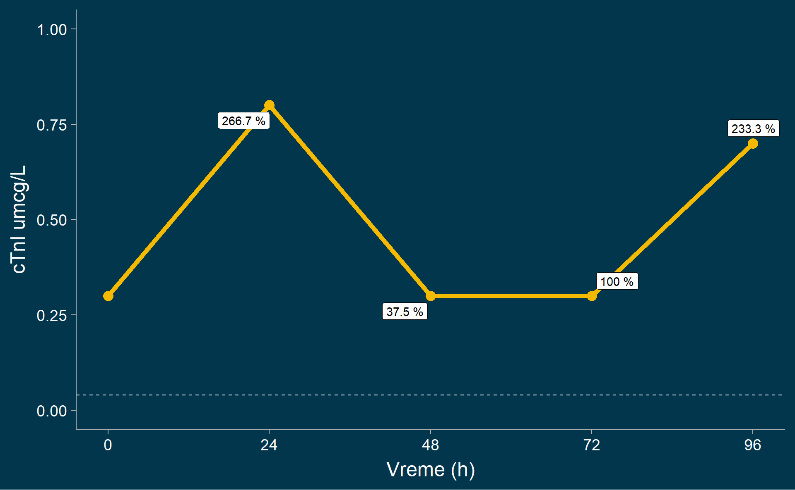
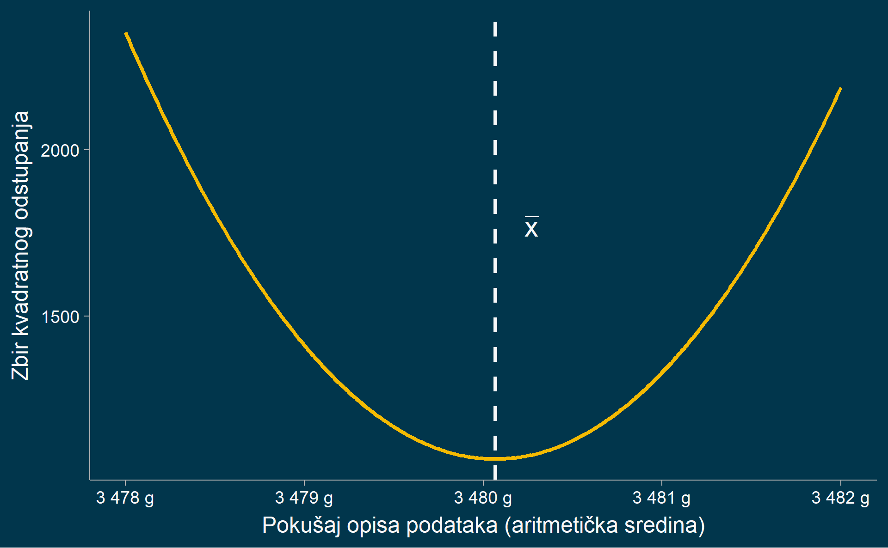
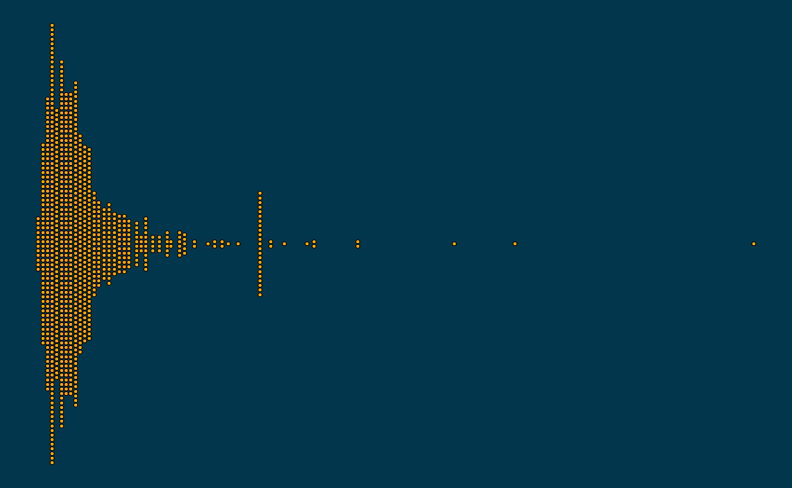
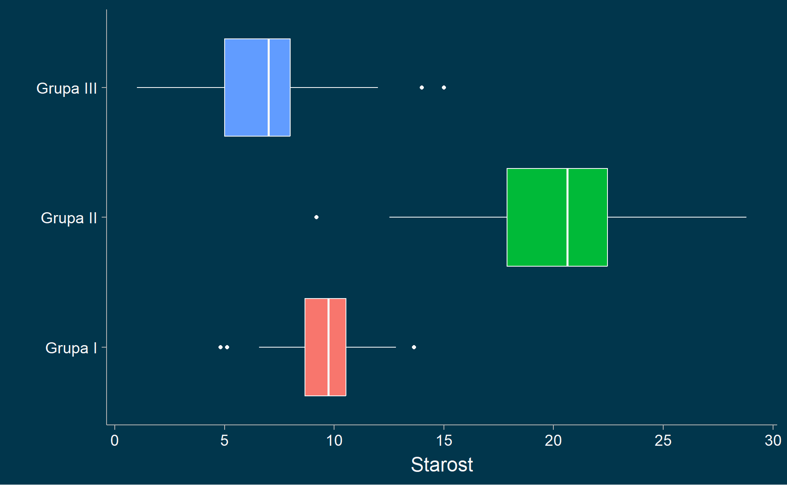
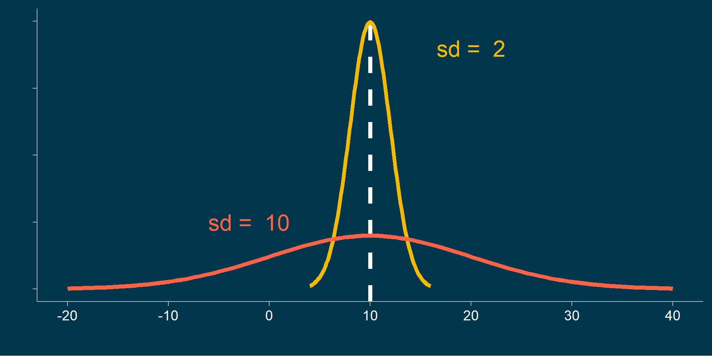

Relativni brojevi (koeficijenti)
Koeficijenti strukture
tinytable_qfvo0ogn1zl6tsjf0cbn
Jedinica
Bolnica A
Bolnica B
Ukupno
Interno
70
80
150
Ginekološko
40
140
180
Hirurško
80
100
180
Pedijatrijsko
50
160
210
Ukupno
240
480
720
Struktura postelja na odeljenjima?
tinytable_uhu5yc06v54cyll7apnf
Jedinica
Bolnica A
Bolnica B
Ukupno
Interno
70
80
150
Ginekološko
40
140
180
Hirurško
80
100
180
Pedijatrijsko
50
160
210
Ukupno
240
480
720
\[ \frac{70}{150} \times 100 = 47 \% \]
Struktura odeljenja u bolnicama?
tinytable_jtsnrrq25yblj5ilugdi
Jedinica
Bolnica A
Bolnica B
Ukupno
Interno
70
80
150
Ginekološko
40
140
180
Hirurško
80
100
180
Pedijatrijsko
50
160
210
Ukupno
240
480
720
\[ \frac{70}{240} \times 100 = 29 \% \]
Struktura postelja po odeljenjima i bolnicama?
tinytable_9woreiroj3tt4d2wv846
Jedinica
Bolnica A
Bolnica B
Ukupno
Interno
70
80
150
Ginekološko
40
140
180
Hirurško
80
100
180
Pedijatrijsko
50
160
210
Ukupno
240
480
720
\[ \frac{70}{720} \times 100 = 10 \% \]
Relativni brojevi za vremenske serije
Indeksi dinamike
Praćenje LDL odgovora na statin (1)

Bazni indeks dinamike
\[ \frac{3.64}{5.2} \times 100 = 70 \% \] \[ \frac{3.42}{5.2} \times 100 = 66 \% \]
\[ \frac{3.3.70}{5.2} \times 100 = 71 \% \]
Bazni indeks dinamike ima uvek istu osnovu .
Praćenje LDL odgovora na statin (2)
Površina infarktnog polja miokarda

Lančani indeks dinamike
\[ \frac{0.8}{0.3} \times 100 = 266 \% \]
\[ \frac{0.3}{0.8} \times 100 = 37.5 \%, \; \text{u padu} \]
\[ \frac{0.3}{0.3} \times 100 = 100 \%, \; \text{u stabilan} \]
\[ \frac{0.7}{0.3} \times 100 = 233 \%, \; \text{u porastu} \]
Lančani indeks dinamike ima uvek prethodnu osnovu .
Statistički koeficijenti
\[ \text{Natalitet} = \; N = \frac{R}{St} \times 1000 \] \[ \text{Mortalitet} = \; M = \frac{U}{St} \times 1000 \]
\[ \text{Incidencija} = \; I = \frac{O_n}{St} \times 100,000 \]
\[ \text{Prevalencija} = \; P = \frac{O_u}{St} \times 1,000,000 \]
Mere centralne tendencije
Problem
Prijateljica ti kaže da se porodila u terminu.
Beba na porođaju ima 2.91 kg .
Rečeno joj je da je ovo ispod proseka, i sad je zabrinuta.
Da li je ovo neobično nisko? Kako definišemo obično ?
Populacija težina neonatusa
Kako da opišemo strukturu ovih podataka?
Šta je model?
Namena statističkog modela je da najjednostavnije predstavi stukturu podataka.
Atlasi koje koristimo ne prikazuju anatomiju kako ona zapravo izgleda u prirodi. Napravljeni su tako da najjednostavnije prikažu tipične anatomske odnose.
Model je opis procesa
Može biti korisno razmišljati o statističkim modelima kao o teorijama kako nastaju opservacije (podaci).
Poznati satističar Džordž Boks je izrekao citat: “Svi modeli su pogrešni, ali neki su korisni.”
Cilj je naći najefikasniji i najprecizniji način da se predstavi mehanizam kojim nastaju podaci.
Šta je greška modela?
\[ \text{podaci} = \text{model} + \text{greška} \]
Preko modela možemo da dobijemo predviđanja .
\[ \text{model} = \widehat{\text{podaci}} \]
Greška modela je razlika između predviđanja modela i stvarnih podataka.
\[ \text{greška}_i = \text{podaci}_i - \widehat{\text{podaci}} \]
This expresses the idea that the data can be broken into two portions: one portion that is described by a statistical model, which expresses the values that we expect the data to take given our knowledge, and another portion that we refer to as the error that reflects the difference between the model’s predictions and the observed data.
Šta je “dobar” model?
Model koji najmanje greši je najbolji model.
\[ \text{greška}_i = \text{podaci}_i - \widehat{\text{podaci}} \]
Šta je najbolji opis podataka
Kako da odredimo vrednost koja najbolje predstavlja podatke?
Mod
Medijana
Aritmetička sredina
Mod
Najjednostavniji predstavnik podataka je najčešća vrednost, tzv. mod (tipična vrednost).
\[ 1,2,2,4,4,4,7,8,9,11,11 \] \[ mod = 4 \]
Mod je jedina mera koja se može upotrebiti za nominalne podatke.
Unimodalna i bimodalna raspodela
Gde su tipične vrednosti?
Prosek neonatalne težine
\[ \bar x = \frac{\sum_{i=1}^{n}x_i}{n} = \frac{x_1 + x_2 + ... + x_n}{n} \]
Ako koristimo aritmetičku sredinu kao opis podataka prosečna greska će biti nula, međutim svaka individualna procena će i dalje imati neku grešku!
Karakteristike artimetičke sredine
Aritmetička sredina ima prosečnu grešku od nula :
\[ \text{prosečna greška} = \frac{1}{n}\sum_{i = n}^n (x_i - \bar x) = 0 \]
Aritmetička sredina ima najmanju moguću prosečnu kvadratnu grešku:
\[ \text{prosečna kvadratna greška} = \frac{1}{n}\sum_{i = n}^n (x_i - \bar x )^2 \]
Zbir kvadrata greške aritmetičke sredine je najmanji

It turns out that if we use the arithmetic mean as our estimator then the average error will indeed be zero (see the simple proof at the end of the chapter if you are interested). Even though the average of errors from the mean is zero, each individual still has some degree of error; some are positive and some are negative, and those cancel each other out to give an average error of zero.
Aritmetička sredina za grupisane podatke
tinytable_hwqokepuft57llugx3c4
Hemoglobin
n
arit. sred. intervala
rezultat
106-110
3
108
324
111-115
7
113
791
116-120
11
118
1298
121-125
16
123
1968
126-130
9
128
1152
131-135
4
133
532
tinytable_k6pj5tusgjyow139w4o7
Ukupno n
Ukupno rezultat
50
6065
\[ \bar x = \frac{6065}{50} = 121.3 \; \text{g/L}\]
Aritmetička sredina aritmetičkih sredina
tinytable_az9nrhgj8a74s59p8a5v
Škola
Broj učenika
BMI
A
255
22.7
B
307
19.4
C
511
20.9
\[ \bar x = \frac{\text{broj učenika}_{škola} \times \text{BMI}_{škola}}{\text{ukupno učenika}_{škola}} = \]
\[ \overline{BMI} = \frac{225 \times 22.7 + 307 \times 19.4 + 511 \times 20.9}{255 + 307 + 511} = 21.1 \]
Prednosti i mane aritmetičke sredine
Predstavlja sve vrednosti
Jednostavna
Ne može da se koristi sa kategorijalnim podacima
Ekstremne vrednosti značajno utiču
Robustna medijana
Manje osetljiva na ekstremne vrednosti (outlier)
Otkriva srednju poziciju
Manje pogodna za analizu
Ignoriše uticaj vrednosti
Računanje medijane (1)
Sirovi podaci:
\[ 8,6,3,14,12,7,6,4,9 \]
Poređani:
\[ 3,4,6,6,7,8,9,12,14 \]
Formula za poziciju medijane:
\[ me_p = \frac{n+1}{2} = \frac{10}{2} = 5 \; (\text{pozicija})\]
Whereas the mean minimizes the sum of squared errors, the median minimizes a slighty different quantity: The sum of the absolute value of errors. Less sensitive to outliers – squaring is going to exacerbate the effect of large errors compared to taking the absolute value.
Računanje medijane (2)
Ako imamo neparanu seriju podataka:
\[ 1,4,8 \] Za parnu seriju podataka uzima se srednja vrednost između dve centralne vrednosti:
\[ 1,4,8, 10 \] \[ me = \frac{4+8}{2} = 6 \]
Prednost i mane mera centralne tendencije
tinytable_r23994ab4n3xv0iasqn4
Kontekst
Mera
Numerički podaci bez ekstremnih vrednosti
Aritmetička sredina
Numerički + ekstremne vrednosti
Medijana
Ordinalni
Medijana
Ordinalni, $\lt3$ kategorije
Mod
Nominalni
Mod
Koliko je retka težina od 2.91 kg?
Perhaps the most crucial lesson from this example is that the dark-grey shaded area in Figure plays two roles: - It represents the proportion of this population of babies being low birth weight. - It is also the probability that a randomly chosen baby in 2013.
So a population can be thought of as a physical group of individuals, but also as providing the probability distribution for a random observation. This dual interpretation will be fundamental when we come to more formal statistical inference.
Mudrost većine
915 ljudi je pokušalo da pogodi koliko ima slatkiša u tegli.
Kako da okarakterišemo varijaciju pogodaka?
Prikazivanje varijabiliteta
Definicija mera varijabiliteta
Mere varijabiliteta opisuju variranje
vrednosti skupa podataka oko srednje vrednosti.
Podela mera varijabiliteta
Apsolutne :
Interval (raspon) varijacije
Kvantil (percentil, decil, kvartil)
Srednje apsolutno odstupanje
Varijansa
Standardna devijacija
Relativne :
Koeficijent varijacije
Standardizovane (normalizovane) vrednosti
Inverval varijacije
Koliko variraju vrednosti od najmanje do najveće?
\[ I = x_{max} - x_{min} = 31337 - 244 = 31093 \; \; \text{opseg pogodaka} \]

Grafikon kutije (Box-and-Whisker Plot)

Definicija varijanse
Varijansa je srednje kvadratno odstupanje od aritmetičke sredine:
\[ \text{Var} = \frac{\sum(x-\bar x)^2}{n - 1} \; \text{grama}^2 \]
Poenta varijanse.
Standardna devijacija

Definicija standardne devijacije
Standardna devijacija je kvadratni koren iz srednjeg kvadratnog odstupanja od aritmetičke sredine:
\[ \text{Var} = sd^{2} = \frac{\sum(x-\bar x)^2}{n - 1} \; \text{grama}^{2} \] \[ sd = \sqrt{\frac{\sum(x-\bar x)^2}{n - 1} \; } \text{grama} \]
Sumirani pokušaji pogodaka
tinytable_uz9erzp7l753fupj68ja
Mera
Svi podaci
Aritmetička sredina
2411
Medijana
1776
Mod
10000
Opseg
244 - 31337
Interkvartilni opseg
1111 - 2600
Standardna devijacija
2422
Opseg je osetljiv na ekstremne vrednosti, bizaran pokusaj od 31000.
IQR nije osetljiv na ekstremne vrednosti. Pokazuje centralnu polovinu.
SD je podlozna ekstremnim vrednostima, najbolja za simetricne podatke.
Medijana je najbolja.
Mod je podlozan zaokruzivanju.
Desno-iskosena pa artmeticka sredina nije pogodna.
Koeficijent varijacije
Je korisna mera kada se porede varijacije između dva uzorka.
\[ CV = \frac{sd}{\bar x} \times {100\%} \] \(\le 30\%\) homogeni podaci.
\(\gt 30\%\) heterogeni podaci.
Koeficijent varijacije se izražava u procentima!
The coefficient of variation should be computed only for data measured on scales that have a meaningful zero (ratio scale) and hence allow relative comparison of two measurements (i.e., division of one measurement by the other). The coefficient of variation may not have any meaning for data on an interval scale.
Homogeni i heterogeni podaci
Z-vrednost
Koliko je standardnih devijacija podatak udaljen od artmetičke sredine?
\[ z = \frac{x_i - \bar x}{sd} \]
Zadaci
Učitati bazu podataka: zadovoljstvo zdravstvenom zaštitom.xlsx
Za varijablu starost izračunati mere centralne tendencije
Aritmetičku sredinu, standardnu devijaciju, koef. varijacije
Mod
Interval varijacije
Izračunati mere centralne tendencije za starost grupisane po polu
Struktura kursa
tinytable_vp64snkkavmamzlrgexw
Nedelja
Tema
1
Uvod u medicinsku statistiku
2
Sređivanje podataka
3
Statističko opisivanje podataka
4
Verovatnoća i raspodele verovatnoća
5
Populacija i uzorak
6
Testiranje hipoteza o populacionim prosečnim vrednostima i proporcijama
7
Testiranje hipoteza o učestalostima
8
Testiranje hipoteza o rangovima
9
Korelacija
10
Regresija / Kolokvijum
11
Podaci, informacije i znanje
12
Zdravstveni informacioni sistem
13
Mere dijagnostičke tačnosti
14
Medicinsko odlučivanje
15
Bioinformatika